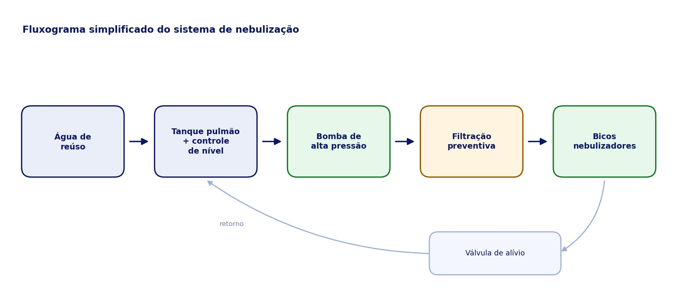
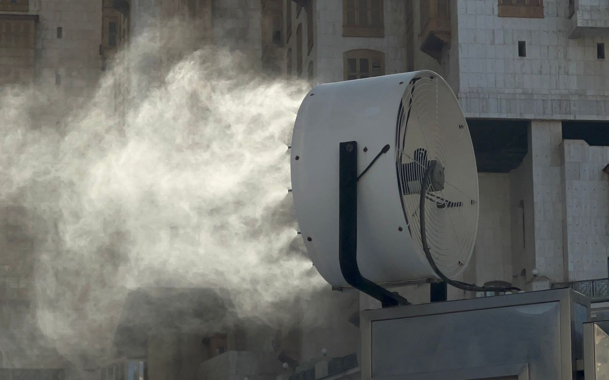
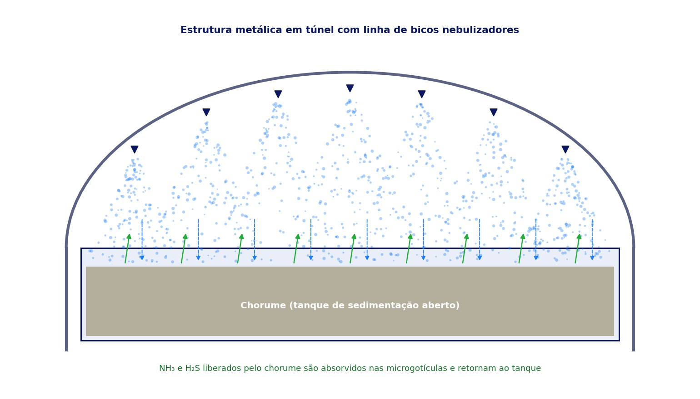
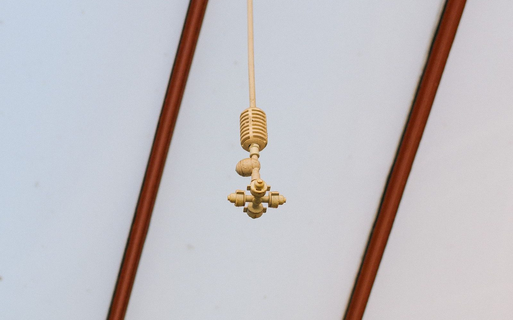

Problema / desafio do cliente
Em uma central de tratamento de chorume no estado de São Paulo, um tanque de sedimentação aberto, por onde escoa uma grande vazão de chorume, liberava gases odoríferos para o interior do galpão de tratamento, principalmente amônia (NH₃) e sulfeto de hidrogênio (H₂S).
As emissões se intensificavam em momentos de grande movimentação operacional, altas cargas de chorume e variações de temperatura. O cliente precisava de uma solução para controlar essas emissões fugitivas que fosse simples de operar, tivesse baixo custo operacional e não dependesse de produtos químicos.
Contexto e características do processo
- Tanque aberto com cerca de 80 m² de superfície livre de chorume exposta ao ar, dentro de um galpão fechado.
- Circulação natural de ar no galpão, que leva os gases liberados para as áreas de trabalho.
- Disponibilidade de água de reúso fornecida pela concessionária de saneamento, sem custo para a planta.
- Necessidade de instalar o sistema sem interromper a operação da estação de tratamento.
Diagnóstico e dados analisados
- Compostos-alvo: NH₃ e H₂S, responsáveis pela maior parte do odor percebido no galpão.
- Fonte principal: a superfície livre do tanque de sedimentação, com volatilização favorecida pela turbulência e pela temperatura do chorume.
- Oportunidade técnica: NH₃ e H₂S são altamente solúveis em água, e essa solubilidade aumenta em temperaturas mais baixas. Uma névoa fria sobre o tanque pode absorver os gases antes que eles se espalhem.
- Alternativas avaliadas: nebulização simples sobre o tanque ou nebulização combinada a uma estrutura em túnel, que concentra a névoa sobre a superfície e aumenta a eficiência de captura.
Metodologia utilizada
- Levantamento das fontes de emissão e das condições operacionais do tanque e do galpão.
- Análise do princípio de absorção dos gases em microgotículas (solubilidade, temperatura e tempo de contato).
- Concepção da estrutura em túnel e da distribuição dos bicos, considerando o ângulo de dispersão e a cobertura vertical e lateral.
- Dimensionamento hidráulico: pressão de operação, tubulação, filtração e proteção contra sobrepressão.
- Modelagem 3D/CAD da estrutura e da linha de nebulização.
- Estimativa de custos operacionais e de investimento em diferentes cenários de implantação.
- Planejamento das fases do projeto, da engenharia ao comissionamento.
Solução de engenharia desenvolvida
A GETA projetou um sistema de névoa fria de alta pressão instalado sobre o tanque de sedimentação:
- Estrutura metálica em túnel, com perfis tubulares e base reforçada, que cobre o tanque e sustenta a linha de nebulização.
- Linha de bicos nebulizadores em tubulação de polietileno de alta densidade, com espaçamento uniforme para cobrir toda a superfície do chorume.
- Alimentação com água de reúso: tanque pulmão com controle de nível por boia (evita operação a seco), bomba de pistão de alta pressão com chave de partida, filtração preventiva contra entupimento dos bicos e válvula de alívio com retorno ao reservatório.
- Princípio de funcionamento: as microgotículas frias absorvem NH₃ e H₂S logo acima da superfície e retornam ao próprio tanque. O sistema aproveita a circulação natural de ar do galpão para conduzir os gases até a névoa.
- Sem insumos químicos: o único consumo é a energia elétrica do conjunto de bombeamento.

Tecnologias e processos envolvidos
A nebulização de alta pressão (névoa fria) atomiza a água em microgotículas por meio de bicos de pequeno orifício. Isso cria uma enorme área de contato entre gás e líquido, ideal para absorver gases solúveis como amônia e sulfeto de hidrogênio. A mesma tecnologia é usada em resfriamento evaporativo e supressão de poeira.

Modelagem, simulação e ferramentas computacionais
- Modelo 3D/CAD da estrutura em túnel e da linha de bicos, para verificar a cobertura da superfície do tanque.
- Cálculos hidráulicos: pressão de operação, vazão por bico, perdas de carga e dimensionamento da bomba e da tubulação.
- Cálculo de cobertura a partir do ângulo de dispersão dos bicos e do espaçamento entre eles.
- Estimativa energética e de custo operacional, e comparação entre cenários de investimento.

Resultados obtidos
O projeto está em fase de aquisição, com o orçamento submetido ao cliente. Os resultados esperados do sistema projetado são:
- Redução projetada de mais de 80% das emissões fugitivas de gases odoríferos com a estrutura em túnel.
- Custo operacional muito baixo: apenas a energia de um conjunto de bombeamento de baixa potência, com água de reúso sem custo.
- Nenhum insumo químico, sem geração de resíduos adicionais.
- Implantação rápida, em cerca de 3 meses, sem interromper a operação da estação.
CAPEX/OPEX e análise técnico-econômica
| Cenário | Investimento relativo | Eficiência esperada |
|---|---|---|
| Nebulização + estrutura em túnel (montagem pela equipe do cliente) | 100 (referência) | Mais de 80% |
| Nebulização + estrutura em túnel (montagem terceirizada) | ~110 | Mais de 80% |
| Somente nebulização, sem estrutura | ~20 a 30 | Menor |
A estrutura metálica representa a maior parte do investimento (cerca de quatro quintos), mas é ela que concentra a névoa sobre o tanque e garante a eficiência de captura. O OPEX se resume à energia elétrica da bomba, já que a água de reúso não tem custo e o sistema não usa produtos químicos.
Escopo e responsabilidades da GETA
A GETA atuou na supervisão técnica do projeto, sendo responsável por:
- diagnóstico das emissões e concepção da solução;
- projeto conceitual e detalhado, modelo 3D/CAD e dimensionamento hidráulico;
- especificação de equipamentos, orçamentos e cenários de investimento;
- cronograma de implantação e acompanhamento das fases de fabricação, montagem e comissionamento;
- treinamento da equipe e entrega da documentação de operação e manutenção.
Principais entregáveis
- Proposta técnica e econômica do sistema de névoa fria.
- Documento de projeto conceitual e lista de equipamentos.
- Modelo 3D/CAD, desenhos técnicos e planilhas de cálculo hidráulico.
- Fluxograma de processo e descrição funcional dos componentes.
- Estimativas de CAPEX e OPEX em diferentes cenários de montagem.
- Cronograma com as fases de engenharia, fabricação, montagem, comissionamento e entrega.
- Previstos ao final: relatório de comissionamento, manual de operação e manutenção e registro de treinamento.
Galeria

Fotos ilustrativas de banco de imagens (Pexels) e esquemas simplificados, preservando a confidencialidade do cliente.